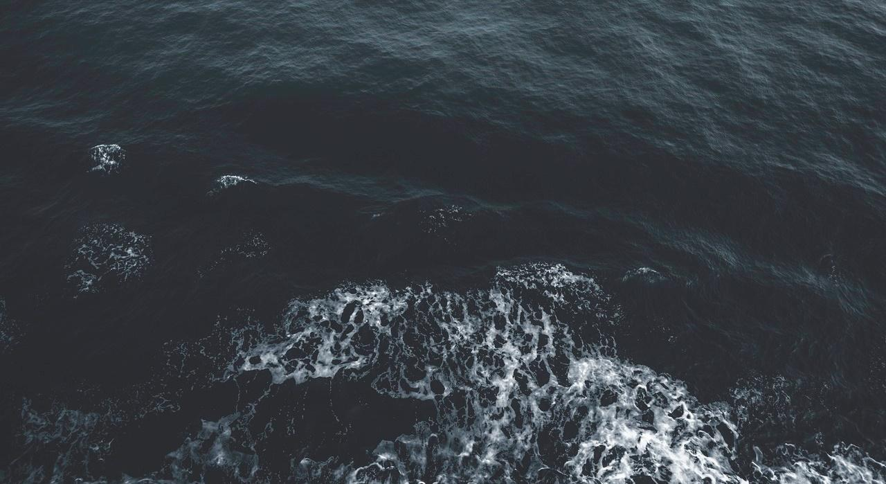
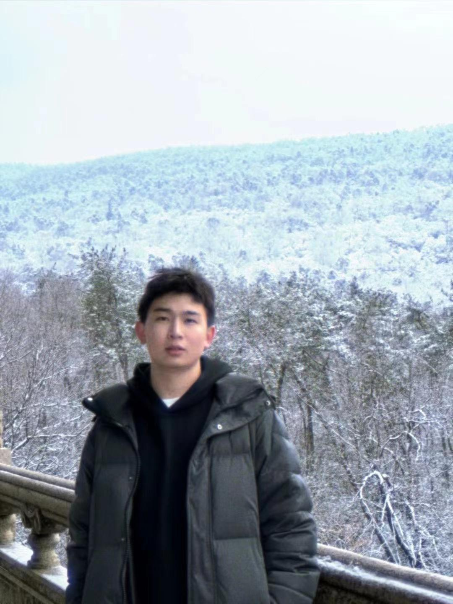
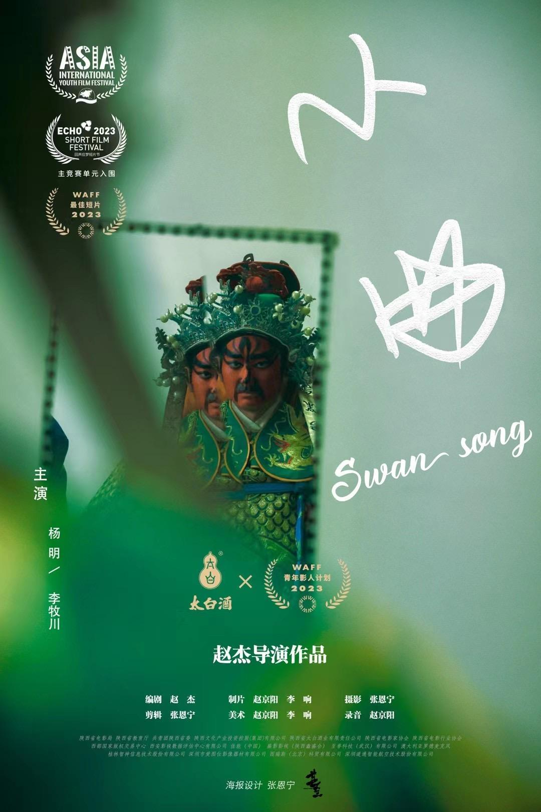
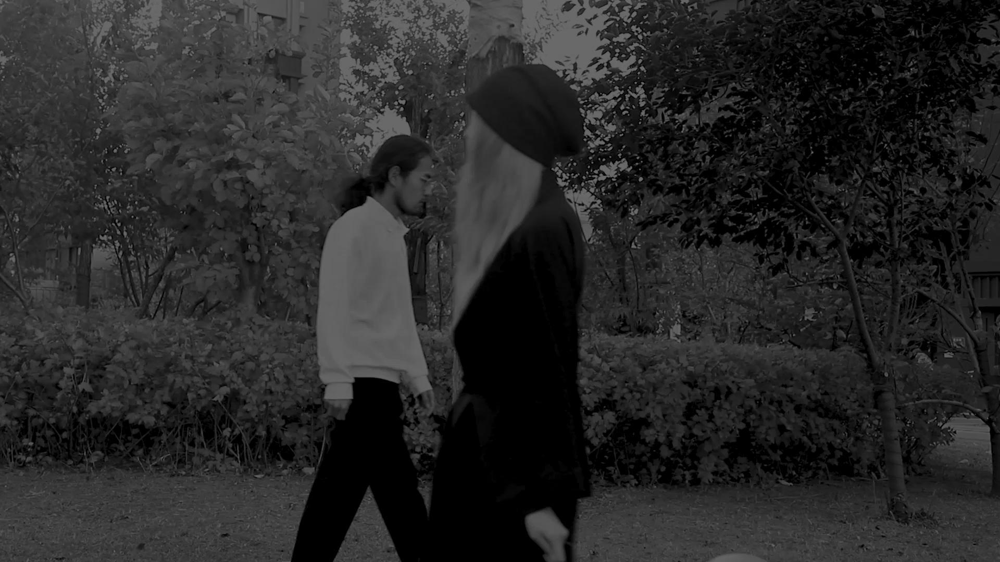
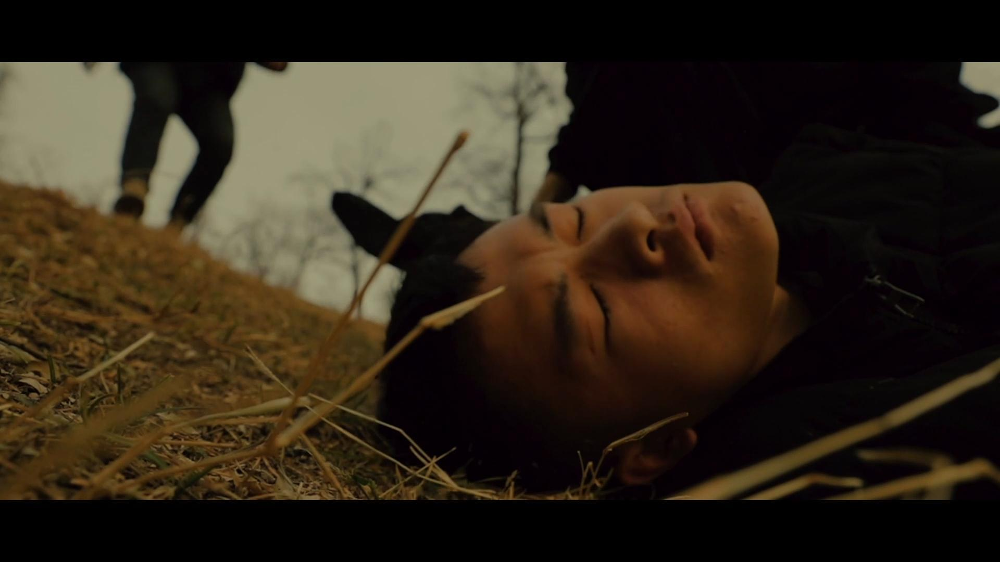
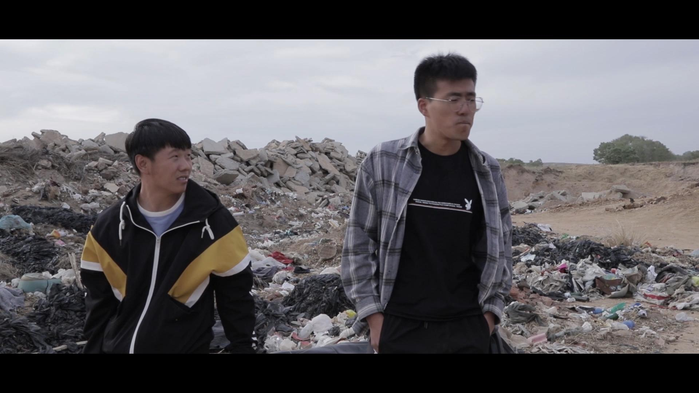
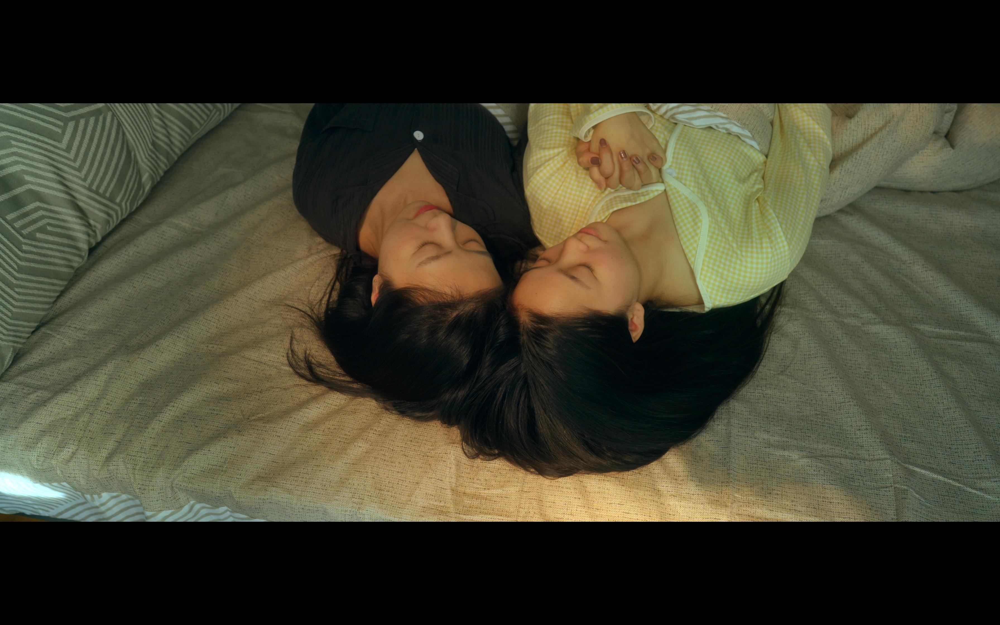

WAFF 最佳剧情短片

Director / Screenwriter / Cinematographer
赵杰
Zhao Jie
影视摄影与制作专业出身，长期从事剧情短片、广告影像、商业拍摄与影像项目统筹。作品关注人物处境、命运感与现实缝隙里的情绪。
留了个白影像工作室
命运比我们的看法更为准确
Fate is more accurate than we think.

Self-Introduction
导演、编剧、摄影，也负责把现场变成可执行的影像系统。
赵杰，1999 年生，常驻北京。曾在传媒公司与广告公司参与影像项目制作，目前以留了个白影像工作室为主要创作与合作入口。
工作覆盖导演编剧、摄影指导、灯光、制片与商业影像执行。既能参与前期文本与分镜，也能进入拍摄现场完成画面、流程和交付的协同。
短片单元最佳摄影提名
最佳影片 / 最佳音效设计
常驻，开放影像合作
Works as Director / Writer
导演与编剧作品
把 PDF 中的剧情短片履历作为网页主线，突出片名、职责、奖项与作品气质。

剧情短片 / 导演 / 编剧
《小曲》 Swan Song
一个关于守护的故事。2023 WAFF 最佳剧情短片，ASIS 短片单元最佳摄影提名，入围溪口应梦短片节、北京国际电影节华硕 E 创公益影像单元。

实验短片 / 导演 / 编剧
《命运》 Destiny
一种思想终将吞噬掉另一种思想。以暗色、抽象与情绪化影像探索命运感。

剧情短片 / 导演 / 编剧
《鸵鸟》 Escape
关于是否有勇气面对自己的人生。KO3 最佳影片，最佳摄影提名，最佳音效设计获奖。

剧情短片 / 导演 / 编剧
《后生》 Youth in Small Counties
一次从羊圈逃离的救赎。获辽宁省网络文化节剧情短片一等奖。
Cinematography / Lighting / Production
摄影、灯光与项目执行

灯光指导
《秋日协奏曲》
剧情短片，导演周明月。以室内光线关系建立人物之间的情绪张力。
摄影指导
《吞没》 / 《找到你了》
参与多部剧情短片摄影指导工作，覆盖潮湿青春、梦境叙事与东亚家庭语境。
制片 / 副导演
《阳台上的女人》 / 《麻雀》
参与北京电影学院联合毕设与剧情短片项目，在现场执行、部门沟通与拍摄推进中承担关键职责。
Commercial Works
商业与活动影像
将 PDF 里的商业项目收束成品牌合作、活动影像、平面与视频制作几类，让访客快速理解你的可合作方向。
摄影 / 商业影像
品牌广告与短视频拍摄
参与康师傅冰红茶、今麦郎饮品、伊利金领冠、抖音短剧春节档 TVC、惠普暗夜精灵、中关村在线等商业项目拍摄。
山一国际女性电影展
2023 北京、2024 深圳南山盛放时刻，参与平面与视频全线制作。
央视频《康康说》《康辉说》
参与央视主持人康辉相关内容项目制片工作，服务节目录制与执行流程。
留了个白影像工作室
承接短片、广告、活动、人物影像、拍摄方案与现场执行协作。
Contact
期待合作。
剧情短片、广告影像、活动拍摄、人物纪录、分镜与拍摄执行相关合作，欢迎联系。